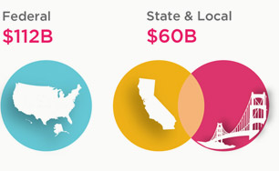

THE OPPORTUNITY
Any place a business, citizen, or other organization interacts with government is a place of opportunity for business to improve the interaction and make money. Just as Turbotax has made the painful process of filing and paying taxes easier for millions of Americans, new business can be created to make it easier for people to pay parking tickets, for entrepreneurs to apply for permits from local governments, or for neighbors to more effectively dispose of waste. What's remarkable is: not only do these businesses make money, they create a change in perspective: paying parking tickets online not only saves the government money, it builds trust between citizens and their government.
IT spending
by 2014
by 2014

Total: $172B
Video game market: ~$10B
Video game market: ~$10B
We see three areas for entrepreneurs to tackle:
- Helping government change from the inside
by fostering a new generation of government vendors that use the best practices from the modern technology industry.
- Building on top of government as a platform
as Turbotax or SeeClickFix does, to provide better interfaces to government processes.
- Compete with government
to replace or provide an alternative to existing services,as a better Freecycle might help reduce the municipal waste burden.
THE PROGRAM
The Code for America Accelerator will support early stage startups interested in creating a new kind of entrepreneurial public service, helping them get from idea to a business that scales. The program provides seed funding, office space, and logistical support, as well as connections to a network of industry and civic leaders, all committed to your success.
Timeline
What we offer
- Startup grant to each team
- Training and guidance on navigating the civic space from experts from industry, government, and startups
- Mentorship and weekly workshops from experts in lean startup methodology, design, procurement, marketing, and more
- Office hours and workshops with startup counsel lawyer and accountant
- Ongoing speaker series with industry and civic leaders
- Office space in San Francisco
- Support from our in-house staff; networking with Code for America fellows
- A passionate and growing community of like-minded individuals solving meaningful problems
Program Criteria
- 2+ founders (at least one must be a developer)
- Entire team must be able to work from the Code for America office full time during the program
- Startups should be early stage and pre-VC funding
- Startups should have a demonstrated civic focus
THE PROOF
We believe there's a tremendous opportunity out there for new civic startups, if for no other reason than that there's a host of startups already succeeding in this space. These examples should serve as precedents in this emerging market.
Select any of the companies listed below for more information about their product, their approach, and their story.
Select any of the companies listed below for more information about their product, their approach, and their story.
THE TEAM
CfA Accelerator teams will have access to dozens of leading government officials with insight into the civic space, entrepreneurs with the experience of starting a company, and industry leaders with the know-how of taking a business to scale.
If you are interested in becoming a mentor, please don't hesitate to get in touch.
If you are interested in becoming a mentor, please don't hesitate to get in touch.
Probable Mentors

Government
- Nigel Jacob
- Chris Osgood
- Jay Nath
- John Tolva
- Brett Goldstein
- Andrew Greenhill
- Peter Koht

Startup
- Chris Metcalf
- Matt Knox
- Ben Berkowitz
- Steve Ressler
- Ron Bouganim
- Clay Johnson
- Alfred Brothers
- Tom Ferris
Industry
- Bryce Roberts
- John Lilly
- DJ Patil